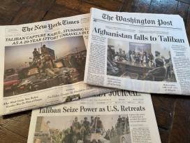
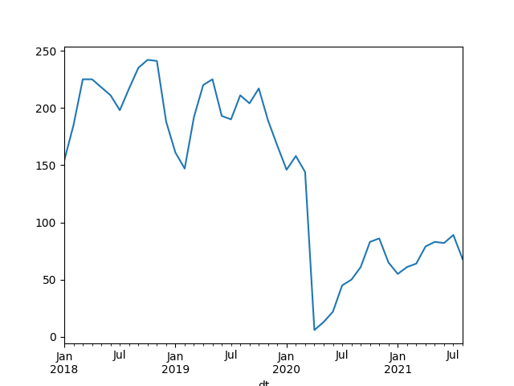
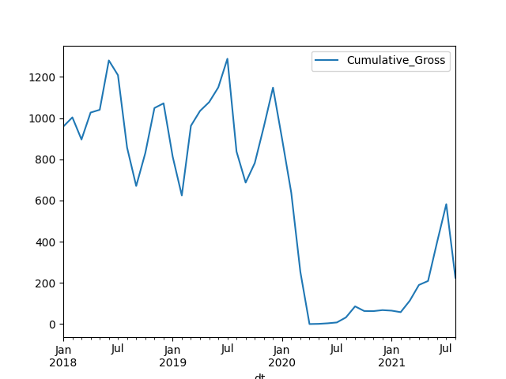

Week 33
"@heyblake
Getting things done is easy.
Knowing what to get done is hard"
New Jeopardy guy quits? That's faster than Trump's one-time Comm Director Anthony Buttafuoco!
Big Swing Face - Hit That Jive Jack #music
"@linakhanFTC
FTC Alleges Facebook Resorted to Illegal Buy-or-Bury Scheme to Crush Competition After String of Failed Attempts to Innovate"
Jane's Defense: "Malaysia flexes missile capabilities in South China Sea.. The Royal Malaysian Navy (RMN) has carried out a rare demonstration of its anti-surface capabilities in the South China Sea, with the firings of three Exocet missiles"
Which tech was used for that I wonder
CNBC: "‘World’s first fossil-free steel’ produced in Sweden and delivered to Volvo"
"@PreetBharara
It’s my understanding that God wants us to do some of the work"
"UK hydrogen strategy.. This strategy sets out the approach to developing a thriving low carbon hydrogen sector in the UK to meet our ambition for 5GW of low carbon hydrogen production capacity by 2030"
Wait until large standard flatbeds print entire bleeping buildings, destroying millions of construction jobs.. That will bake your noodle friend.
"@MarkTakano
BIG NEWS: I’ve just introduced legislation in Congress calling for a four-day work week. It’s well past time that Americans have more time to live their lives, and not just work"
Actually it sounds more like Leh·juhn·druh doesn't it? Like what up bruh
For Legendre
Leh·juhn·dray. Got it
Hacks from all sides reached a whole new level after this pullout. I do a double-take on some of the "analysis'".. Like, really? Mfker really said that?
The Daily Beast: "Seth Meyers drags media for hosting Afghanistan war hawks like John Bolton and Karl Rove"
"@Michael_J_Black
If you believe that social media can replace peer review, consider my experience. Every paper I've published has been improved by peer review. I can't say the same for comments on Twitter. I may not always agree with reviewers but they spend hours with my paper, not seconds"
Laws in physical sciences are mathematical, the best ones are usually incredibly compact, intelligeble, in continuous form. In order to compute them the formulas are 'discretized' (a whole branch of sci itself), approximation is introduced, checked against data.
In ML, or so-called "AI", things work the other way around; they start with approximation, computation first, and... stay there. They don't have a formula for their domain. There is no mathematical model of thought.. all they have is bunch of 'patterns' captured from raw data in an unintelligeble format.
If anyone thinks one can reach human level AI from this, I have a bridge to sell them.
"Is Machine Learning compatible with the Scientific Method?.. [P]art of what we celebrate as scientific progress is the transition from the data (observed orbits) to patterns in the data (Kepler’s laws) to theories explaining the data (Newtonian theory of gravity). [.. M]erely identifying the hidden correlations in the data is generally not enough in science. It is the explanation of why these patterns exist with the aid of a more fundamental and universally applicable scientific theory ... that we acknowledge and cherish as scientific progress"
Yet "the helicopter lifting off from US embassy in Saigon" is still the ultimate picture of a foreign policy failure in people's minds.
"Nixon secured his 'decent interval' between the United States pullout of Vietnam and the N. Vietnamese takeover"
Bob Rumson is not happy
Movie recom from AFP..? Will check
AFP: "Definitely check out ‘Reminiscence’ .. great Minority Report-style action sci-fi starring Hugh Jackman"
Jane's Defense: "South Korea, Australia prepare updated defence agreement"
BBC: "France wildfire: Thousands evacuated as blaze rages near Riviera"
Experiment generated 70% of what it put in. Awaiting for higher Q.
Wikipedia: "The condition of Q = 1, when the power being released by the fusion reactions is equal to the required heating power, is referred to as breakeven"
"@FLF_Nick
[.. Fusion dev has] a gain [or Q] of 0.7"
BBC: "US lab stands on threshold of key nuclear fusion goal.. The National Ignition Facility uses a powerful laser to heat and compress hydrogen fuel, initiating fusion"
"@ScottishPower: We Welcome The UK Government’s Hydrogen Strategy Today, It’s A Clear Sign Of The UK’s Ambition To Be A Hydrogen Leader"
Mujahideen were the good guys then (remember Rambo 3), some of whom formed the Taliban later.
Charlie Wilson's War's message was about US "leaving" Afghanistan in 1989, after the Soviets left, not reforming the country.. Well-meaning thought.. except US didn't leave. They stayed and continued stirring things up, helping entrench the civil war there between mujahideen and the central government.
Pollitico: "A two-decade-long megadrought along the Colorado River is pushing seven Western states and parts of Mexico into a formal shortage declaration, forcing water delivery cuts to the Southwest"
Politico: "Vice President Mike Pence is ramping up his donor outreach as he weighs a 2024 White House bid"
King Teddy - Earlysville #music
Charlie Wilson's War... touching movie w that message in the end.. probably sums up disappointment of many. But cld US ever deliver on those wishes?
Alexander the Great and other Greeks before him went to Afghanistan.. more than a few stayed. I look at the faces now, spot Greek, Anatolian looking mfkers...
Without being AI automation can still do a lot of damage (the good kind damage, the kind that kills jobs)
"Although machines like [the sorter below] look incredibly complex, [manager] says that they are actually pretty simple. The decision to whether or not to reject a piece of produce (or stone, or clod of earth, as often happens) is a yes/no question that can be answered without much calculation. Likewise, because the rejectors are spread out in line, it's just a matter of timing to pick the right one to knock out the offending article. And over the years the machines have gotten good"
From Asimov's Robot series.. And later that strand (and the AI dude) will connect to the Foundation storyline; it will be good.. How far will the new show take it, dunno
That's the "lead AI" from Asimov.
Yes that far out
This is AI (dude in the right)
{kind=link}
This is automation
Automation is not the same thing as AI
Terra Nova was a good show. Canceled? With that Avatar guy.. cld have been a better Lost.
A couple of years ago I published dataset with Sci-Hub downloads from 2017: https://t.co/iRsTxsmV6q
— Alexandra Elbakyan (@ringo_ring) August 15, 2021
after that some guy downloaded my dataset and posted in on Zenodo (@ZENODO_ORG) Now the dataset is cited in papers as HIS dataset, not Elbakyan's dataset:https://t.co/iGCKULN7HQ

"@Lj_mir
'Ashraf Ghani, the Afghan President who has apparently just fled to Tajikistan (which was invaded by the Taliban...) writing for the Los Angeles Times [in 1989]'"
{kind=link}
Actually Dubya WH worked through local warlords. Bama WH made a major surge; so if you go by the numbers, it was Obama who invaded Afghanistan.
Clearly both methods failed.
I dont think there was a 'good way' of getting out of Afghanistan.
Tali wins.. All that after dropping them bombs.. Remember MOAB?
Trump tried to tame Afghanistan for a while too apparently.. Didn't work.
"PhD Student from Leibniz Institute for Catalysis Discovers a New Type of $H_2 O$ Splitting.. Mechanism of a new type of water splitting with which photolysis [the decomposition or separation of molecules by the action of light] can be made inexpensive"
Data lists top grossing releases every month, Black Panther 2018 did better than Infinity War. They can't not make sequels to this movie, hire a new lead at some point.
Movie releases
df['Releases'].plot()

Decrease in movies releases.. it's a supply issue too
Box office cumulative gross (in millions), since 2018
Data from BoxOfficeMojo
import pandas as pd
pd.set_option('display.max_columns', None)
df = pd.read_csv('boxoff.csv',sep='\t')
df.loc[:,'dt'] = df.apply(lambda x: pd.to_datetime(x.Month + " " + str(x.Year)), axis=1)
df.loc[:,'Cumulative_Gross'] = df.apply(lambda x: float(x['Cumulative_Gross'][1:].replace(",","")), axis=1)
df = df.sort_values('dt')
df.loc[:,'Cumulative_Gross'] = df['Cumulative_Gross'] / 1e6
df = df.set_index('dt')
df[['Cumulative_Gross']].plot()

There were months with a bil gross. Then the pandemic hit.
It was sorta recovering (half a bil) in July 2021, but then the Delta variant
Piedmont Park, Atlanta, nice scenery.
A lot of compsci approaches I am looking at (for a certain domain) feel old school... Fit for single CPUs.. Wanna bypass it all, jump straight into high paralelization.
"Over the past two decades improvements in the arithmetic capabilities of processors have significantly outpaced advances in random access memory. Algorithms which have traditionally been compute bound—such as dense matrix-vector products—are now limited instead by the bandwidth to/from memory"
Al Jazeera Eng has some good docu's. The one on NK, and on limits to econ growth very good..
"Russia Approves #Hydrogen Energy Development Concept. 1st stage involves creation of specialized clusters & pilot projects for production/export of hydrogen & for domestic market"
Jeffrey Sachs: G20 shld be G21; African countries shld join as an African Union (EU joined as a union, why not AU?)
What food was foreign to (most) hunter-gatherers? Tomatoes. For many in the "Old World", until 16th century there were no tomatoes. The veg is associated with Italian cooking, but this is a mistake, a recent development... They, nor or the Greeks, or anyone wld have known it before 16th.. So if you dont like tomatoes, do not feel bad. Biologically we did not need it, not part of our evolution, so can safely be eliminated from diets.
There was no god damn missile gap. JFK either lied or foolishly believed in it himself, likely the former. There was a missile gap much earlier, that's why US placed missiles in TR. Bcz of the 60s missile gap, this time with USSR at a disadvantage, USSR wanted to place missiles in Cuba.
"How about the missile gap of 1960s? JFK won the election thanks to it"
Another Berlin story, Checkpoint Charlie. One tank moves back five meters, the other too, and another.. Major standoff.
It's true, the North Korean embassy in Berlin is also a hostel. I passed by it many times.. At first u dont realize it, first see the hostel, keep walking, while turning around the corner, u notice the NK stuff. Then it's like 'wait.. it's the same building!'
I remember this AFG Prez having bunch of power sharing issues while back.. now think.. over what? Gov disintegrated like cotton candy!
Tali in the palace.. Bleeping hilarious
Daam.. AFG Prez got - the - fuck out
NYT: "[A Sicilian town Floridia] is perhaps the most blisteringly hot town in the recorded history of Europe, offering Italy and the entire Mediterranean a preview of a sweltering and potentially uninhabitable future brought on by the globe’s changing climate... [A] nearby monitoring station registered a temperature of ... nearly 49 degrees Celsius.... the unprecedented heat rendered Floridia a blindingly bright ghost town, with its bars deserted, its baroque and sand-colored churches darkened, its piazzas emptied. In the surrounding fields, the area’s famed snails burned in their shells. The relentless sun branded the verdello green lemons with yellow blots and stewed their flesh within. Everyone holed up in their houses. The air-conditioning they blasted prompted blackouts"
The "balanced plate" idea for prediction is looking better.. Bunch of eqs on one side (bottom left), had to be balanced by a big eq on the other side.
7.2 in Haiti
NYT: "Why the Afghan Military Collapsed So Quickly.. The Taliban’s rapid advance has made clear that U.S. efforts to turn Afghanistan’s military into a robust, independent fighting force have failed, with its soldiers feeling abandoned by inept leaders"
BBC: "Climate change: July world's hottest month ever [says] US agency"
WSJ: "Greece Clamps Down on Aid Groups That Help Migrants.. The country has accused nongovernmental organizations of involvement in trafficking as part of its efforts to stem the flow of migrants and refugees who continue to make dangerous journeys to Europe"
Amazon?
q = yf.get_financials("AMZN")
print ('AMZN', [(d[:20] + ': ' + q[d]) for d in ds])
AMZN ['Revenue (ttm): 443.3B', 'Quarterly Revenue Gr: 27.20%', 'Quarterly Earnings G: 48.40%']
Earnings growth 48.40%? Is that right?
Now we know where all that pandemic spnding went.
The company certainly helped itself by pushing for content like The Mandalorian, becoming less cuck
Disney raked it in..? Let's check
import yf
ds = ["Revenue (ttm)", "Quarterly Revenue Growth (yoy)",\
"Quarterly Earnings Growth (yoy)"]
q = yf.get_financials("NFLX")
print ('NFLX', [(d[:20] + ': ' + q[d]) for d in ds])
q = yf.get_financials("DIS")
print ('DIS', [(d[:20] + ': ' + q[d]) for d in ds])
NFLX ['Revenue (ttm): 27.59B', 'Quarterly Revenue Gr: 19.40%', 'Quarterly Earnings G: 87.90%']
DIS ['Revenue (ttm): 63.59B', 'Quarterly Revenue Gr: 44.50%', 'Quarterly Earnings G: N/A']
DIS rev growth looks good
CNBC: "Disney won this earnings season by adding 12 million Disney+ subscribers while Netflix's growth stalled"